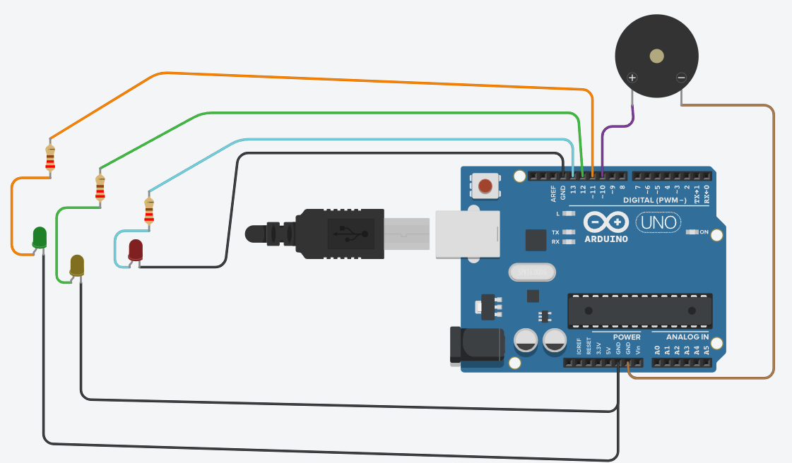

En este apartado se presenta el código completo que integra el control de los LEDs del semáforo con el buzzer:
// Declaración de constantes para los pines de los LEDs y el buzzer
const int ledRojo = 13; // LED rojo conectado al pin digital 13
const int ledAmarillo = 12; // LED amarillo conectado al pin digital 12
const int ledVerde = 11; // LED verde conectado al pin digital 11
const int buzzer = 10; // Buzzer conectado al pin digital 10
void setup() {
// Configuración de los pines como salidas
pinMode(ledRojo, OUTPUT); // LED rojo como salida
pinMode(ledAmarillo, OUTPUT); // LED amarillo como salida
pinMode(ledVerde, OUTPUT); // LED verde como salida
pinMode(buzzer, OUTPUT); // Buzzer como salida
}
void loop() {
// Encender la luz verde para indicar que los peatones pueden cruzar
digitalWrite(ledVerde, HIGH);
// El buzzer emite 5 sonidos intermitentes (beeps)
for (int i = 0; i < 5; i++) {
digitalWrite(buzzer, HIGH); // Buzzer encendido (emite sonido)
delay(300); // Esperar 300 milisegundos
digitalWrite(buzzer, LOW); // Buzzer apagado (silencio)
delay(300); // Esperar otros 300 milisegundos
}
// Apagar la luz verde
digitalWrite(ledVerde, LOW);
// Encender la luz amarilla indicando precaución
digitalWrite(ledAmarillo, HIGH);
delay(2000); // Esperar 2 segundos
digitalWrite(ledAmarillo, LOW); // Apagar la luz amarilla
// Encender la luz roja indicando que los peatones deben esperar
digitalWrite(ledRojo, HIGH);
delay(5000); // Mantener la luz roja encendida por 5 segundos
digitalWrite(ledRojo, LOW); // Apagar la luz roja
// El ciclo se repite infinitamente
}

Robótica Educativa (RE).
Ejemplo
Obra publicada con Licencia Creative Commons Reconocimiento No comercial Compartir igual 4.0